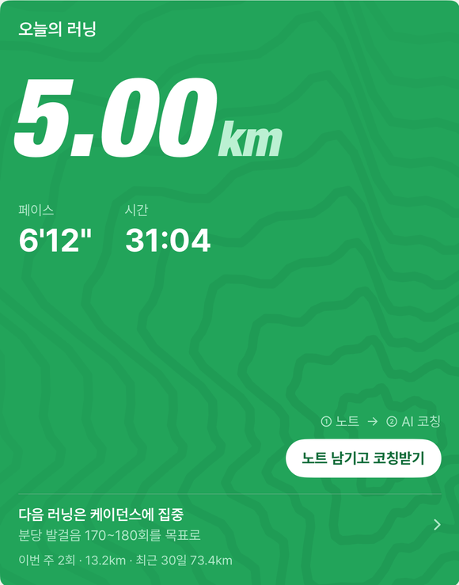
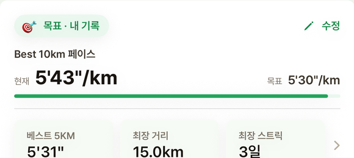

RN
RUN · NOTE러닝 노트 · AI 코칭
뛰고 나서 한 줄,
기록이 쌓일수록 나를 아는 코치가 됩니다
실시간 트래킹 앱이 아니에요. 워치로 뛰고 앱을 열면 기록은 자동으로 들어와 있고, 남기는 건 컨디션과 한 줄 노트뿐. 그 한 줄이 쌓일수록 Claude AI가 당신의 패턴을 더 정확히 짚어냅니다.
다운로드는App Store
출시 예정 · iPhone & Apple Watch · 7일 무료 체험
5Kkm 오늘
Z3심박존
AI코칭 완료


